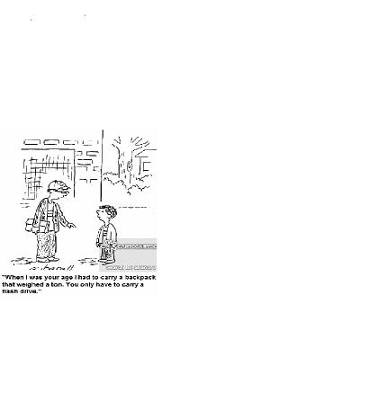

Timothy Jones
Timothy Jones
A few things about Timothy Jones
My name is Timothy Jones. I cannot honestly say that I have a hometown as my family and I have moved around a lot, mainly in the state of Texas, no hometown though, unless you would consider the back of a station wagon home. Finding places to shower here and there and occassionaly being able to get enough food stamps to be able to eat a meal with your family, bologna sandwiches, bread and meat. Being as there were so many of us and our parents, mainly my father always on the run or never paying the light bill or putting gas in the vehicle, made life interesting, but at the time, I didn't know any different. Although now it makes sense of my father always parking our vehicle in a garage away from our house or behind an abandonded building. So I would just have to claim Texas as my home state. I have lived in every part of Texas, West Texas, North Texas, East Texas, South Texas , name any of the cities I have been there and probably kicked out of there along with my family.
My major is this time is Data Science, although I do have multiple degrees in various areas. Business Management, Occupational Therapy and my latest degree being in Biology from West Texas A&M University before moving my family and me up here to Grand Forks, North Dakota.
I have 10 siblings, 6 brothers and 4 sisters and counting me, that is 7 boys and 4 girls. And yes to answer to go ahead and answer the common question, we are all from the same parents. My mother has a Masters Degree in English and my father, who has not been in the picture for quite some time, has Dual Master Degrees in English and History and was a professor at several different colleges and universities, but since my mom and father got their last divorce he has been on the run ever since. As soon as the State of Texas would find him and garnish his wages he would quit his job and scurry on down the road to find another job and just keep repeating the same game and still does to this day. The majority of my family lives in the southern United States, Oklahoma and Texas. I am the only one to venture this far North, to North Dakota and I am proud to call it home, for now. I do not mind the cold weather and the very springful springs and summers and falls. It is an enormous change from the hot dry dirty wind blowing weather that I was raised in. At least here, my wife, children and I can enjoy going outside, almost, year round. In Texas the best time to go outside was in the middle of the night. My mother raised my siblings and me to be very independent individuals and did not only accept us going to school to be educated, but was also very strict about teaching more at home. My mother encouraged us to read and to also learn more and more about anything that may interest us and always use proper grammar. As children we enjoyed a lot of ups and a lot of downs. There are benefits and drawbacks being a family that large. I, of course, currently attend UND and I am 39 years old.
file:///C:/Users/tj761/Documents/index.html/index.html/index2.html
file:///C:/Users/tj761/Documents/index.html/index.html/index3.html
